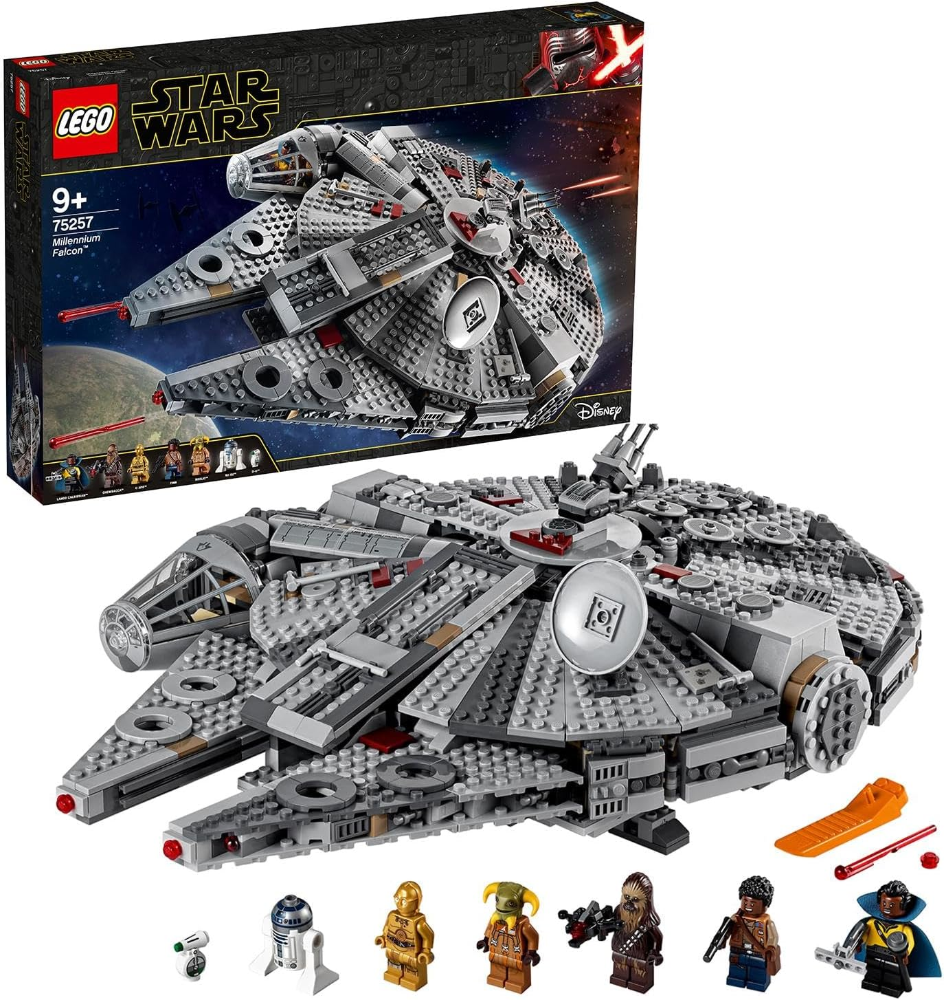
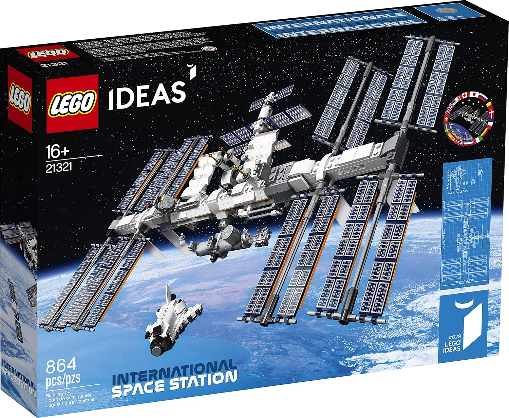
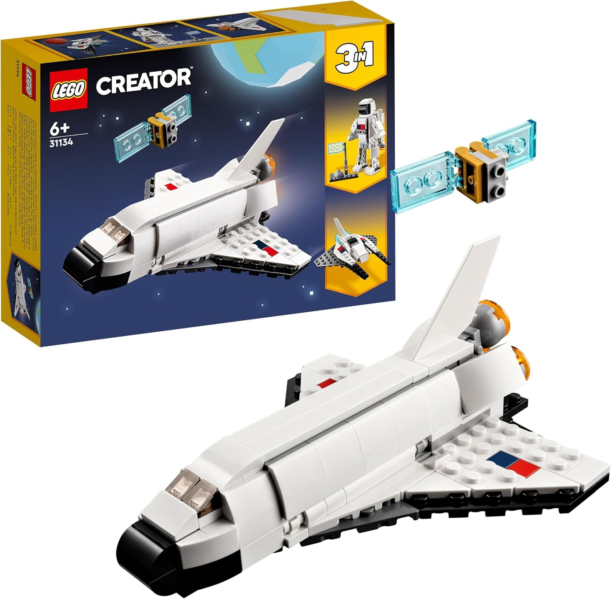
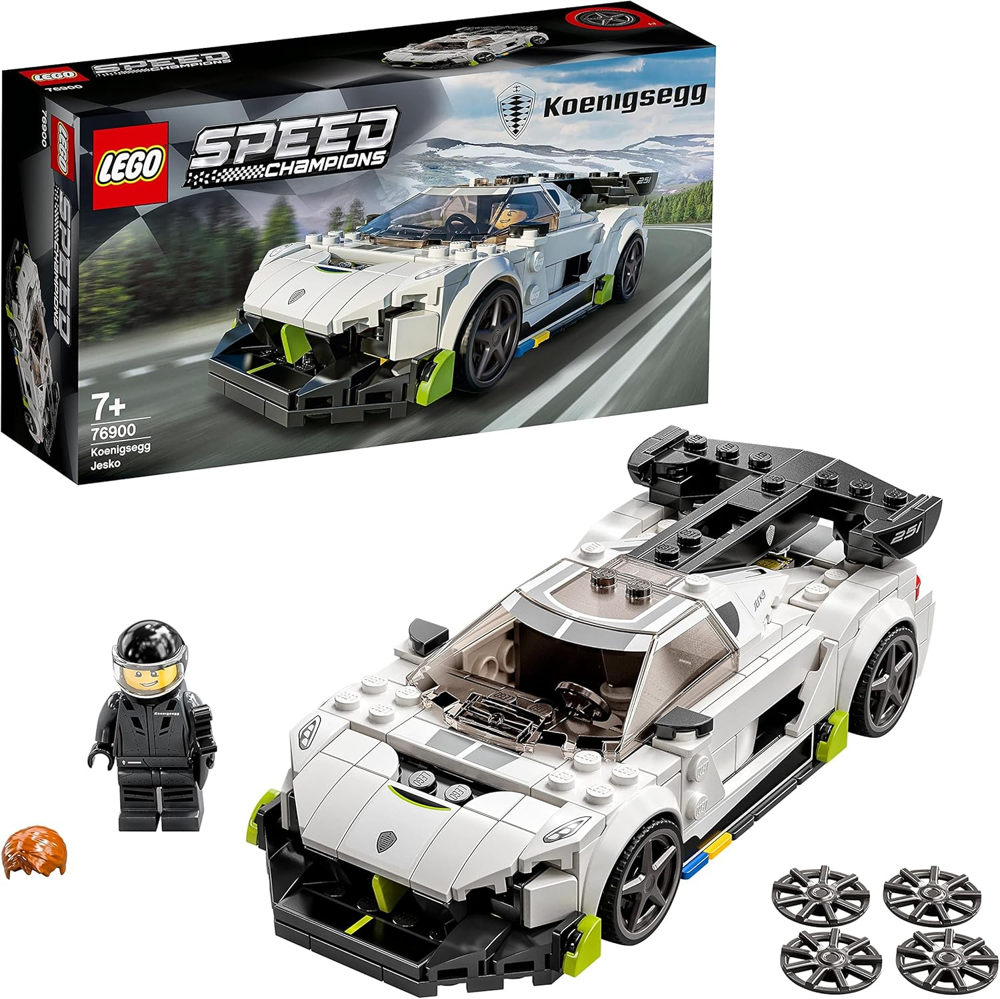
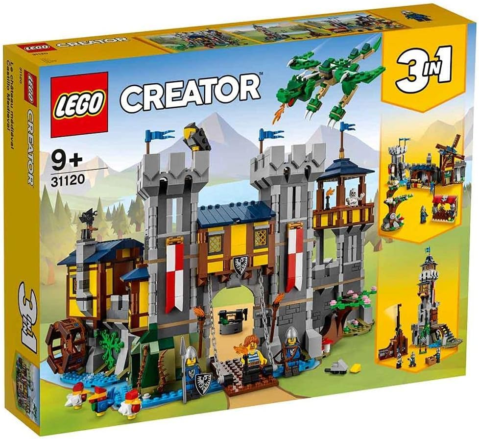
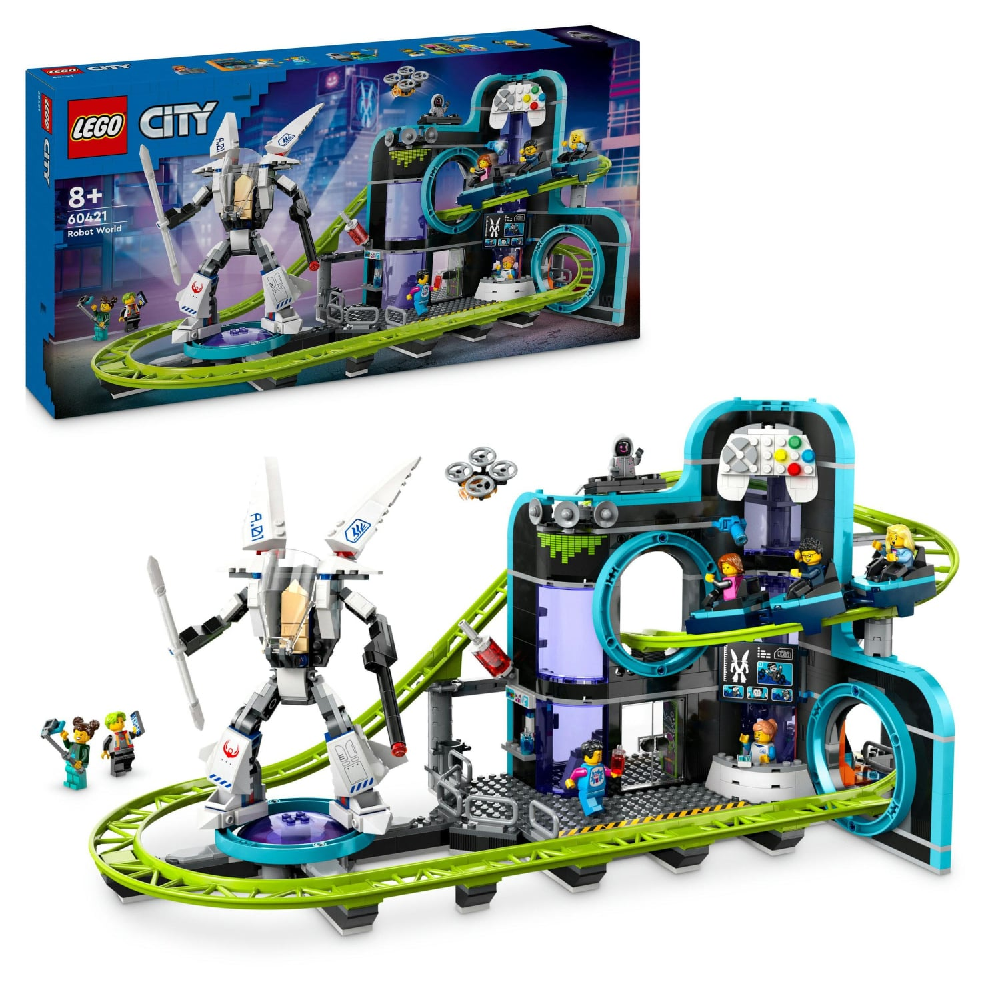
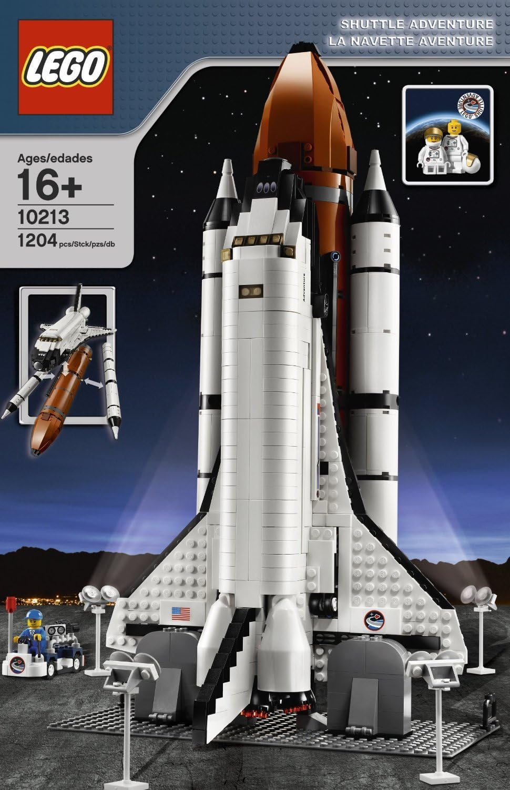
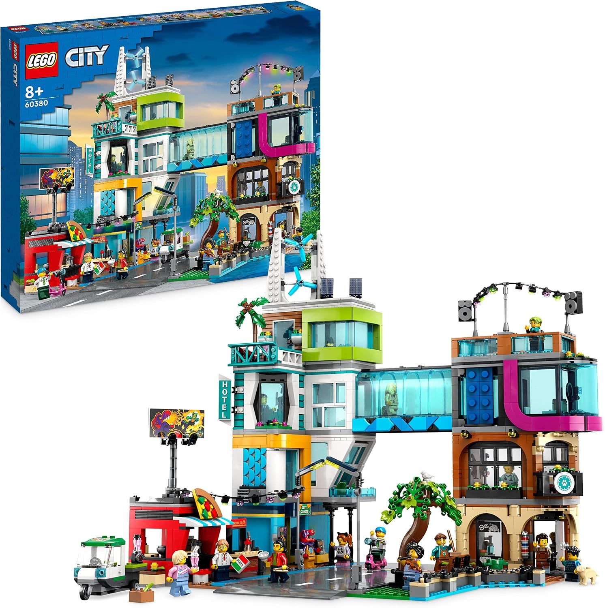
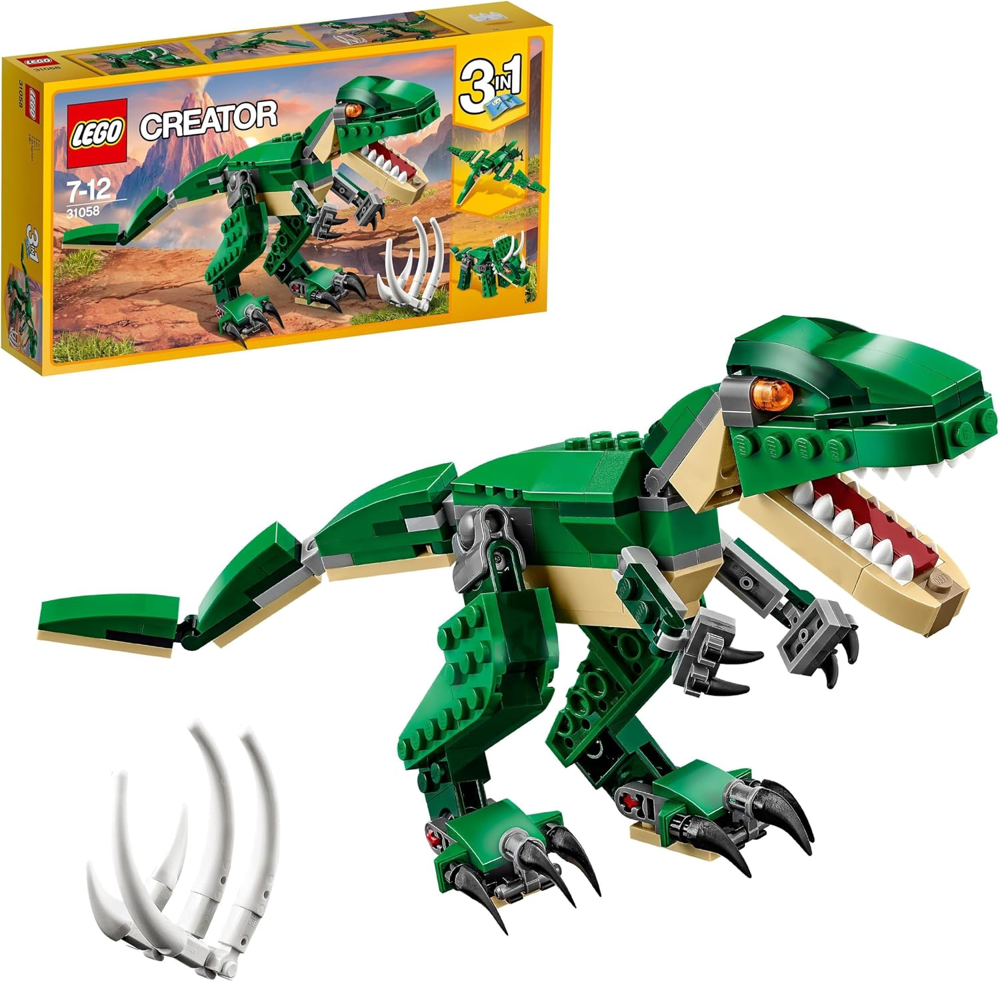
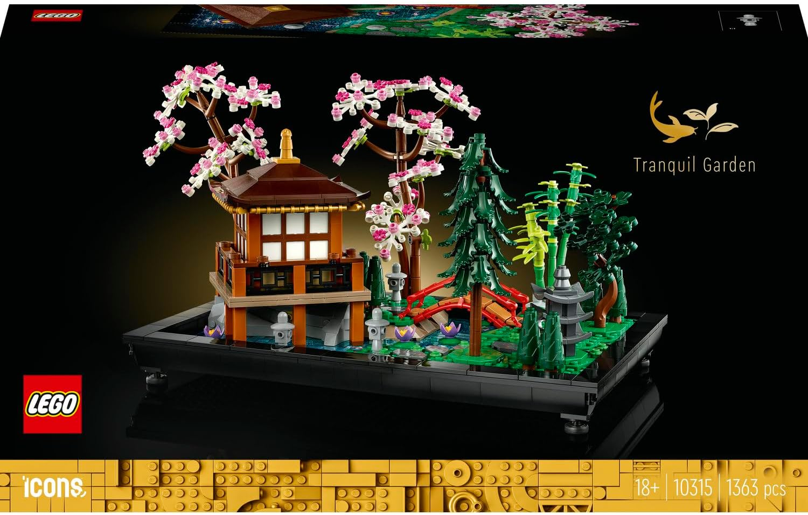

Halcón Milenario
El que todos conocen. Es un verdadero clásico y la mayoría de fans de LEGO tienen uno.
Aquí hay varias recomendaciones para empezar tu colección
Descubrir sets
El que todos conocen. Es un verdadero clásico y la mayoría de fans de LEGO tienen uno.

Una buena recreación de la estación espacial internacional, de mis sets favoritos de LEGO ideas.

Es de los tipicos lanzamientos de LEGO creator que te deja crear "tres sets en uno" con las piezas que te dan. Muy entretenido si no puedes comprar varios sets.

Uno de los coches principales de la colección LEGO speed champions. Es más asequible que los de LEGO technic y trae una minifigura.

Uno de los principales sets "3 en 1" de LEGO creator, es de los más creativos con temática medieval que he visto.

De los pocos sets de LEGO city con temática sci-fi futurista. Incluye varias minifiguras y muchas piezas que son dificiles de encontrar en otros sets.

Parecido al set de la nave espacial de LEGO create, solo que tiene un enfoque más realista a una estación de despegue.

Discutiblemente de los mejores sets de LEGO city. Trae el centro de la ciudad con muchos ladrillos coloridos y minifiguras para decorar sus calles.

Un set de LEGO creator de la colección "3 en 1", este tiene temática prehistórica y se utilizan bien las piezas para formar a cada dinosaurio.

Un set de LEGO icons que me resultó muy satisfactorio construir. Todas sus piezas encajan perfectamente entre sí y tiene mucho potencial decorativo.
Para aquellos que buscan una gran libertad al construir. Casi todos los sets espaciales destacan por el amplio espacio que estos otorgan, sin contar los vehículos como las naves.
Si te gusta mucho la parte técnica de construir, y juntar piezas móviles e incluso crear movimiento automático (en varios sets de technic) entonces deberías empezar por aquí.
Fans de RPGs, peliculas medievales, y mundos como la tierra media de Tolkien disfrutrarán de esta categoría. También hay sets de aventura con varias temáticas no medievales como Ninjago, Chima y Bionicle.
Descubre nuevas ideas, amplía tu colección y encuentra tu próximo set.
Ver colecciónUna página creada con una gran pasión sobre todo lo relacionado con sets de LEGO. Dentro de esta web se destacan varios de los que considero los mejores sets que he visto.